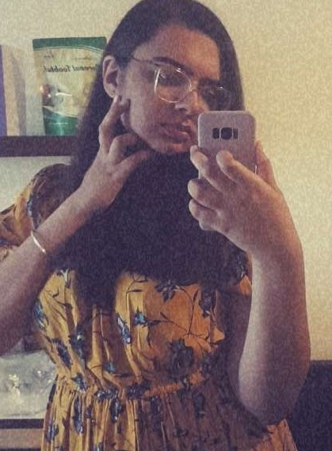

Happy Birthday, Vanya!
It's me hi Im the problem it's me! After you are done reading all this I'm gonna kill myself because of the embarrassment so yeah where do I even begin, it still feels like it was yesterday when we started dating and I know this is gonna take me down or get lynched by your dad but god I am still head over heels in love with you just like I was when we started dating if not more and I know Im not the perfect boyfriend or even close to being good, I know I fight a lot and get mad a lot. I know I make the same mistakes every time. Bridges burn, I never learn, at least I did one thing right I did one thing right that is falling in love with you and you know The devil's in the details, but you got a friend in me Would it be enough if I could never give you peace? god, this one feels forced but moving on. I love watching anime, movies, and series(I know I whine a lot while watching kdrama) with you trust me watching "your name" with you every year feels so good not only that, I enjoyed that weight lifting fairy and Itaewon class(i know we haven't finished it), The Hangover trilogy, I think we watched it before we started dating and man I loved it so much and I WANNA WATCH THAT 100GF ANIME BUT YOU DON"T LIKE HAREM ANIMES. you know this night is sparkling, don't you let it go. I'm wonder struck, not blushing all the way home ofc. I'll spend forever wondering if you knew. I was and still am enchanted to meet you especially during those nights *wink wink* IF YOU KNOW WHAT I MEANNN and I will be enchanted forever because my god you are the best. Now you know what I was typing that time hehe. This is the only gift I can give you properly on time for this birthday but I swear that on your next birthday, I will try to do better. Again happy birthday my love I hope and pray that you get all the success and happiness in this world because you deserve it. I wanna say more but that will make this letter boring so on the ending note I want you to know that I WILL MARRY YOU WITH PAPER RINGS SINCE YOU HAVE NO PROBLEM WITH THAT enough with Taylor Swift songs but yeah best of luck with your exam my princess love you most.
Click on your photo
